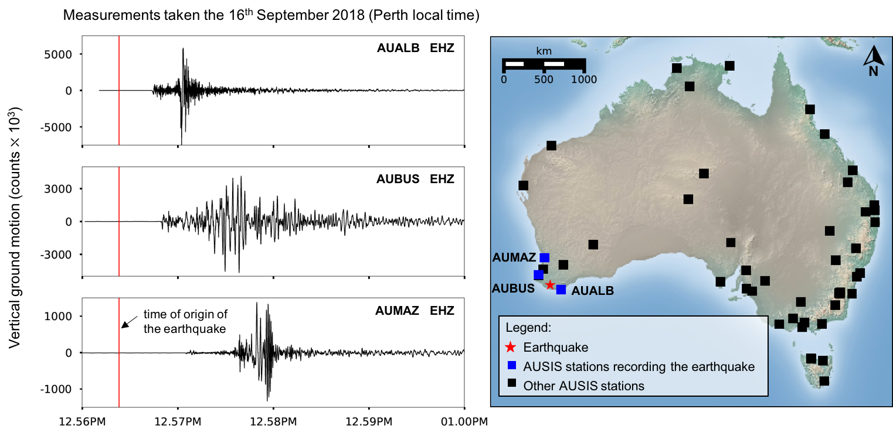
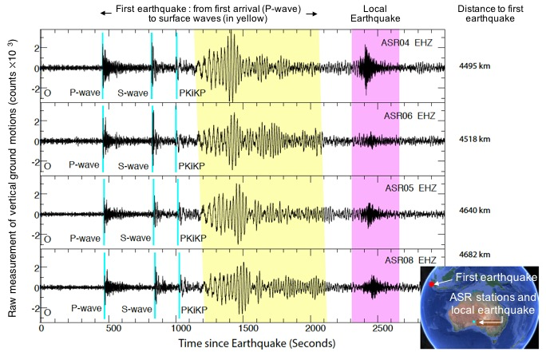

Our sponsors:

On Sunday 16 September 2018, an unusually large earthquake was recorded at three schools in Western Australia. The shallow intraplate earthquake of magnitude 5.7 (Geosciences Australia) struck at 12.57 PM (local time) about 430 km south of Perth. The earthquake was recorded by at least three seismometers installed in schools in Albany (AUALB), Busselton (AUBUS) and Perth (AUMAZ), all being part of the permanent AuSIS network. The AUALB station, located in Albany, was the closest to the epicenter and the first to record the earthquake. The earthquake was felt up to 350 km away from the epicenter and reported over 500 times to Geosciences Australia. Though events of this magnitude are fairly uncommon in Australia, some of the largest earthquakes recorded in the country have happened in Western Australia. The largest of them, of magnitude 6.5, occured in Meckering in 1968 (see preliminary report).
On 1st September 2017 two earthquakes were recorded at four stations of the ASR temporary network located in the South-Australian outback. The ASR array is collecting broadband seismic data in remote areas of South Australia, including the Maralinga Tjarutja land aboriginal territory and the Woomera Prohibited Area, covering about 120 thousand square kilometres and used for military testing. Ten instruments were installed in South Australia in 2017, followed by three additional sites further north in APY Lands in 2018.

The measurements taken at four ASR stations revealed two earthquakes occuring shortly after the instruments were installed. The first event corresponds to an Mw 6.3 earthquake occuring in Sumatra, and the second to an Mw 3.3 earthquake occuring in Petermann Ranges. This second earthquake would have been challenging to detect at stations loacted further away from the source. Monitoring such earthquake activity is important to improve hazard assessment in the Petermann Ranges, where larger earthquakes have been observed in the past decades (e.g. Mw 6.0 in May 2016).
In April 2018, the Australian National University installed a dense passive seismic line extending from Marla to Oodnadatta (the MO line), in South Australia. The MO line runs for about 230 km from west to east, with seismic stations every 3.5 km along the line. The MO line is a proof of concept, aiming to image the lithosphere (rigid outer part of the Earth including the crust and the upper mantle) with seismic signals coming from both ambient noise and earthquakes. The MO line is designed to fill the gap between active and passive seismic arrays, providing high resolution cross sections of the lithosphere at crustal scale. The MO line is targeting an area where large changes in crustal thickness have been identified. From a combination of active and passive seismic data, seismologists have built a model of the Moho depth (AusREM), revealing a thick crust (48 km) near Marla getting thinner towards Oodndatta (28km). The acquisition of new seismic data along the MO line will allow high resolution imagery of the crust in this region.
References:
Our sponsors: